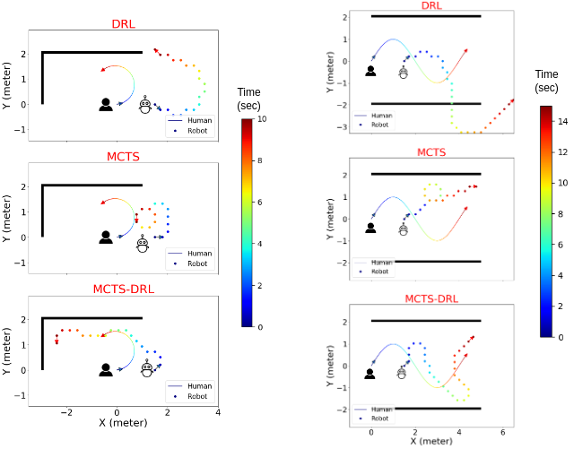
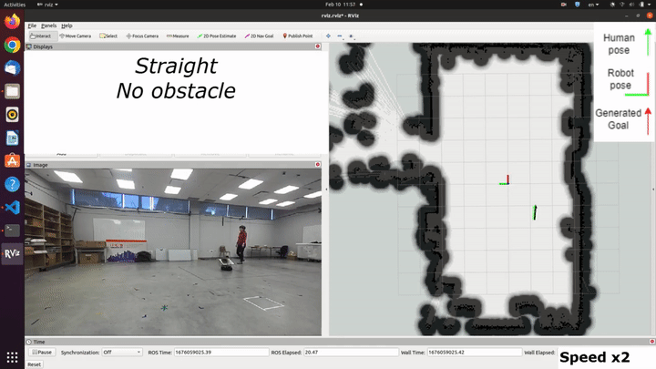

We propose a novel methodology for robotic follow-ahead applications that address the critical challenge of obstacle and occlusion avoidance. Our approach effectively navigates the robot while ensuring avoidance of collisions and occlusions caused by surrounding objects. To achieve this, we developed a high-level decision-making algorithm that generates short-term navigational goals for the mobile robot. Monte Carlo Tree Search is integrated with a Deep Reinforcement Learning method to enhance the performance of the decision-making process and generate more reliable navigational goals. Through extensive experimentation and analysis, we demonstrate the effectiveness and superiority of our proposed approach in comparison to the existing follow-ahead human-following robotic methods.
MCTS-DRL vs MCTS and DRL
The experiment is conducted in two distinct human trajectories: a circular path and an S- shaped path. The results reveal that the DRL approach is unable to effectively follow the human and avoid obstacles, which is attributed to the training of the model in an obstacle-free environment. Also, the MCTS approach fails to generate consistent results, particularly around corners which is due to its random action selection. In contrast, the proposed MCTS-DRL method demonstrates a superior performance, generating a trajectory for the robot that effectively maintains a specified distance from the human, avoids occlusion and collisions with obstacles, and results in a consistent and stable behavior.
Follow-ahead in an obstacle-free environment
We conducted a comparison between the performance of human following in an obstacle-free environment using the proposed MCTS-DRL method and the LBGP method proposed in [1]. The outcomes of the experiments, in terms of the mean human-robot relative distance and mean orientation angle (α), are presented in the following table. The results demonstrated that the robot successfully main- tained the human-robot relative distance within the range of [1, 2] m for all trajectories, and attempted to follow the human in front. This experiment demonstrates the efficacy of the proposed MCTS-DRL approach in achieving comparable results to previous methods in obstacle-free environments.
[1] P. Nikdel, R. Vaughan, and M. Chen, “Lbgp: Learning based goal planning for autonomous following in front,” in 2021 IEEE Interna- tional Conference on Robotics and Automation (ICRA). IEEE, 2021, pp. 3140–3146.
Obstacle and occlusion avoidance
Since there are no existing follow-ahead methods proposed for environments with obstacles, comparisons with other methods were not possible. Therefore, the following scenar- ios were conducted to evaluate the performance of the pro- posed method in the presence and absence of obstacles within the environment. Our algorithm is capable of following the target person along any random trajectory.

@inproceedings{X,
title={An MCTS-DRL Based Obstacle and Occlusion Avoidance Methodology in Robotic Follow-Ahead Applications},
author={Leisiazar, Sahar AND Park, Edward AND Lim, Angelica AND Chen, Mo},
booktitle={IEEE/RSJ International Conference on Intelligent Robots and Systems (IROS)},
year={2023},
}